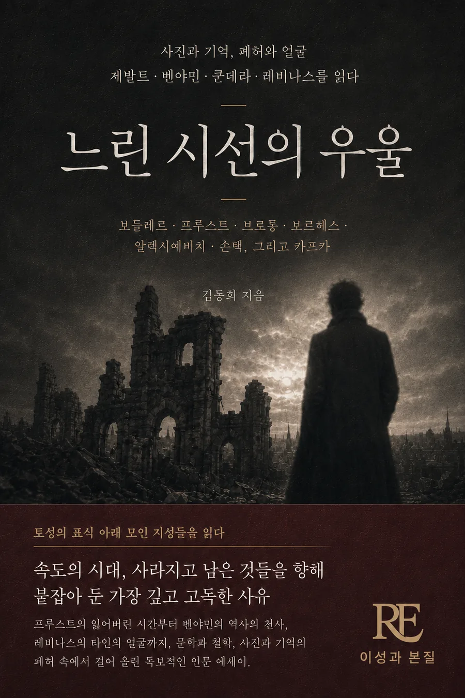

프루스트의 잃어버린 시간부터 벤야민의 역사의 천사, 레비나스의 타인의 얼굴까지. 속도의 시대에 사라지고 남은 것들을 향해 붙잡아 둔, 가장 깊고 고독한 사유의 기록.
제발트, 벤야민, 쿤데라, 레비나스는 각기 다른 시대와 언어로 사진과 기억, 폐허와 얼굴을 응시했습니다. 이 책은 이들의 사유를 하나의 계보로 엮어, 속도의 시대에 우리가 잃어버린 '느리게 보는 법'을 되찾고자 합니다.
제발트·프루스트·벤야민을 이미 좋아하거나 처음 만나고 싶은 독자, 사진과 기억, 상실을 사유하는 에세이를 좋아하는 독자.